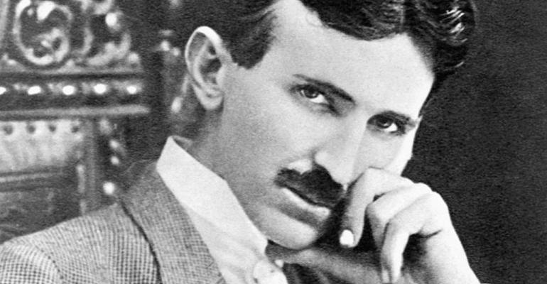

Nikola Tesla
"Se você quiser descobrir os segredos do Universo, pense em termos de energia, frequência e vibração."

Nikola Tesla, inventor austríaco.
Saiba quem foi Nikola Tesla e conheça suas principais contribuições para a humanidade
- Nikola Tesla nasceu no dia 10 de julho de 1856 na Áustria
- Filho de um sacerdote ortodoxo, desde pequeno, foi treinado por seu pai para desenvolver a memória e o raciocínio. Sua mãe era descendente de família de inventores.
- Em 1873 iniciou o estudo de Engenharia Elétrica, no Instituto Politécnico de Graz, na Áustria, onde estudou principalmente física e matemática.
- Em 1880 formou-se na Universidade de Praga.
- Em 1881 entrou para a companhia telefônica de Budapeste, onde começou sua carreira de engenheiro eletricista.
- Em 1882, Tesla descobriu o campo magnético rotativo, um princípio fundamental da física e da base de todos os dispositivos que usam correntes alternadas. Nesse mesmo ano, trabalhou na Companhia Continental Edison, em Paris.
- Em 1884, foi convidado para trabalhar na firma de Thomas Edison (1847-1931) em Nova Iorque, para onde se mudou.
- Ao todo, Nikola Tesla registrou cerca de 40 patentes nos Estados Unidos e mais de 700 no mundo todo. Suas invenções foram focadas na utilização da eletricidade e magnetismo, entre eles: a lâmpada fluorescente, o motor de indução (utilizado em indústrias e em vários eletrodomésticos), o controle remoto, a Bobina Tesla, transmissão via rádio, o sistema de ignição utilizado nas partidas dos carros, a corrente alternativa etc.
- Em 1894, Nikola Tesla recebeu o título Honoris Causa pela Universidade de Columbia, e a medalha Elliot Cresson, pelo Instituto Franklin.
- Em 1934, a cidade da Filadélfia concedeu-lhe a medalha John Scott pelo seu sistema de energia polifásico. Nikola era membro honorário da Associação Nacional de Luz Elétrica e membro da Associação Americana para o Avanço da Ciência.
- Durante muitos anos, o hotel Waldorf Astoria, em Nova Iorque foi a residência de Nikola, quando ele estava no auge do poder financeiro e intelectual. Durante os últimos dez anos de vida residiu no New Yorker Hotel, onde faleceu.
- Nikola Tesla faleceu em Nova Iorque, Estados Unidos, no dia 7 de janeiro de 1943.
"Não creio que haja uma emoção mais intensa para um inventor do que ver suas criações funcionando. Essas emoções fazem você esquecer de comer, de dormir, de tudo."
Se quiser saber um pouco mais sobre esse ser humano incrível, acesse a acesse sua biografia completa aqui.